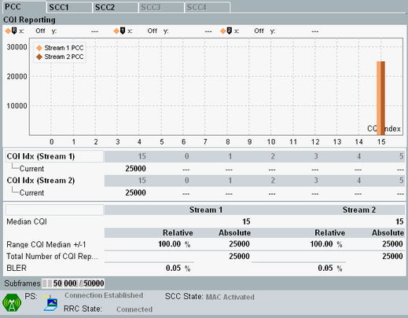

The main focus of the "CQI Reporting" view is on evaluation of the CQI index values reported by the UE. This view is only available if CQI reporting is enabled in the signaling application (see "Enable CQI Reporting").
If the UE reports CQI values per stream (for example for TM 4 or TM 9), all results are displayed per stream as in the following figure. Otherwise, the results are displayed as "Stream 1" results.
For carrier aggregation scenarios, the results for the individual component carriers are presented on different tabs. If you want to evaluate CQI reports for several carriers, ensure that the configured "CQI/PMI Config Index" of the carriers is compatible, see "CQI/PMI Config Index".

The bar graph shows how often the CQI indices 0 to 15 have been reported by the UE since the measurement has been started. The table directly below the bar graph provides the index value and the height of the seven highest bars in the diagram.
- "Median CQI": median of the CQI values reported by the UE
Add the bars of one stream from left to right. The median CQI value is the index value where the sum reaches/crosses 50% of the total sum. This definition of the median value is specified in 3GPP TS 36.521, section 9. - "Range CQI Median +/-1": evaluation of three adjacent bars, from median CQI - 1 to median CQI + 1
The absolute value indicates the sum of the three bars. The relative value indicates the percentage of the absolute value relative to the sum of all bars of the stream. - "Total Number of CQI Reports": total number of received CQI index values (sum of all bars per stream)
- "BLER": relative BLER result per stream, as shown in the "BLER" view
For "Subframes", see "Common View Elements".